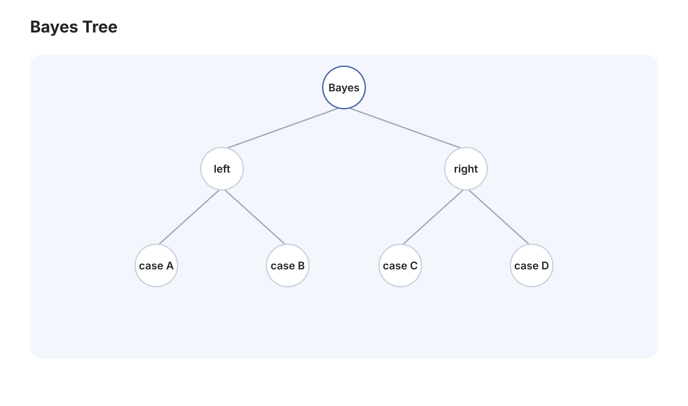

本页目录
概率 I · 概率空间与贝叶斯公式
概率论的第一页解决"概率是什么"：Kolmogorov 公理把它定义为满足三条规则的集合函数——从此概率论成为严格数学，其余一切（条件概率、独立性、Bayes）都是公理的推论。本页也是全站与 AI 课程交汇最密的一页：贝叶斯公式是机器学习半壁江山的地基。
学习层：阳性之后，证据把谁推到前台？
1. 具体情境：10,000 人的虚构筛查队列
把“某人阳性”改写成一支可以数清楚的队伍。虚构某种疾病筛查 10,000 人：默认患病率为 \(1\%\)，灵敏度为 \(99\%\)，特异度为 \(95\%\)。现在只看检测阳性的人：其中有多少人真的患病？
这里的“\(99\%\) 准确”必须拆开说。灵敏度是患病者中测得阳性的比例，特异度是健康者中测得阴性的比例；它们都不是“阳性者中患病的比例”。最后一个问题正是 Bayes 要更新的对象。
2. 先预测：在看队伍之前押一个数
先不操作实验，写下你的预测：
- 默认参数下，阳性者中真的患病的比例更接近 \(1\%\)、\(17\%\)、\(50\%\) 还是 \(99\%\)？
- 10,000 人中只有 100 人患病；即使 99% 的患病者被检出，健康人贡献的假阳性会不会更多？
- 若只把特异度从 \(95\%\) 提高到 \(99.9\%\)，你预期 \(P(D\mid +)\) 会变化多少？先写“变化方向”和“大致幅度”，再用实验核对。
3. 最小模型：从人群计数到后验
令 \(D\) 表示患病，\(+\) 表示阳性，并记
所以假阳性率不是 \(c\)，而是 \(P(+\mid\bar D)=1-c\)。在这支固定队伍上，四个互斥格子的计数由下式确定：
阳性后的后验和阴性后的后验分别是
默认参数给出 \(TP=99,\ FN=1,\ FP=495,\ TN=9405\)。因此阳性总数是 \(594\)，而
同一更新也可以在赔率尺度上读：
默认时先验赔率为 \(1/99\)，\(LR_+=0.99/0.05=19.8\)，所以后验赔率为 \(1/5\)，还原成概率就是 \(1/(1+5)=1/6\)。证据把赔率乘上似然比，而不是把 \(99\%\) 直接当成后验。
4. 动手实验：让一万个人沿着概率树走一遍
拖动患病率、灵敏度和特异度，或先点击两个有教学意义的预设。原生 SVG 会把“人口 \(\rightarrow\) 真实状态 \(\rightarrow\) 检测结果”画成确定性的树状流带，并同步列出 \(TP/FP/FN/TN\)、\(PPV\) 和 \(NPV\)。这里没有随机抽样：每个数都直接由上面的乘法更新；流带线宽是帮助读结构的示意，四格计数才是精确读数。
无 JavaScript 时的静态读法：固定 \(N=10000\)，默认 \(\pi=1\%\)、\(s=99\%\)、\(c=95\%\)。直接计算 \(TP=99,\ FN=1,\ FP=495,\ TN=9405\)，所以 \(P(D\mid+)=99/(99+495)=1/6\approx16.7\%\)，而 \(P(\bar D\mid-)=9405/(9405+1)\approx99.99\%\)。提高特异度会减少假阳性；重复检测只有在“给定真实状态时条件独立”等假设成立时，才可以把似然比直接相乘。
5. 误区/边界：公式的方向和假设都要检查
- 条件概率方向不能交换。 \(P(+\mid D)=99\%\) 回答“患病者有多常阳性”；\(P(D\mid+)=PPV\) 回答“阳性者有多常患病”。二者由基率和另一分支共同决定，一般不相等。
- 特异度不是“阳性准确率”。 \(c=P(-\mid\bar D)\)，而假阳性率是 \(1-c\)。因此健康人数很多时，即使 \(1-c\) 很小，\(FP\) 仍可能超过 \(TP\)。
- 这是确定性队列，不是随机模拟。 非整数滑块设置下的计数表示 \(N\) 人群模型的期望计数；它用于揭示比例关系，不声称某次现实抽样一定得到相同整数。
- 重复阳性不能无条件连乘。 只有在给定 \(D\) 或 \(\bar D\) 后，两次检测误差条件独立，并且检测条件、阈值和人群定义保持一致时，才有 \(P(+,+\mid D)=P(+\mid D)^2\) 以及相应的似然比连乘。共享样本、相同系统误差或症状导致的相关性都会破坏这个步骤。
- 后验不是检验的固定常数。 灵敏度、特异度依赖阈值和目标人群；患病率换了，\(PPV/NPV\) 也会换。任何分母为零的极端设置还必须先确认条件概率是否有定义。
6. 回到定理：Bayes 只是条件概率加全概率
当 \(P(+)>0\) 时，从条件概率定义出发：
分母正是按完备事件组 \(\{D,\bar D\}\) 展开的全概率。于是“先验 \(\times\) 似然，再除以证据”不是一条脱离定义的口诀，而是把观察到的结果重新归一化。赔率形式只是同一等式除以 \(P(\bar D\mid+)\) 后的简写。
7. 迁移题：换基率、换证据、换假设
- 保持 \(\pi=1\%\)、\(s=99\%\)，把特异度调为 \(99.9\%\)。不用实验，先算 \(FP\) 和 \(PPV\)，再解释为什么少改一个测试参数会带来大幅后验变化。
- 某人第一次和第二次都阳性。若两次检测在给定真实状态后条件独立，且两次 \(s,c\) 相同，写出后验赔率如何从 \(\pi/(1-\pi)\) 更新；然后说明哪一种共享误差会让“似然比平方”失效。
- 某人阴性时，为什么默认参数下可以说“基本排除”比“阳性后基本确诊”更接近事实？用 \(NPV=P(\bar D\mid-)\) 和四格计数各写一句，不要把 \(NPV\) 误读成 \(P(D\mid-)\)。

1. 概率空间
三元组 \((\Omega, \mathcal{F}, P)\)：样本空间 \(\Omega\)（一切可能结果）、事件域 \(\mathcal{F}\)（\(\Omega\) 的一族子集，对补与可列并封闭——σ-代数）、概率测度 \(P\)。
Kolmogorov 公理（1933） \(P: \mathcal{F} \to [0,1]\) 满足：
- 非负性：\(P(A) \geq 0\)；
- 规范性：\(P(\Omega) = 1\)；
- 可列可加性：\(A_1, A_2, \dots\) 两两互斥 \(\Rightarrow P\big(\bigcup_i A_i\big) = \sum_i P(A_i)\)。
（为什么需要 \(\mathcal{F}\) 而不给所有子集都定义概率？\(\mathbb{R}\) 上存在无法赋予长度的集合——实变页 Vitali 集；σ-代数就是"能安全谈概率的事件清单"。本科阶段记住动机即可。）
基本性质（全部由公理推出，各一行）：\(P(\varnothing) = 0\)；\(P(\bar A) = 1 - P(A)\)；单调性；加法公式
次可加性 \(P(\cup A_i) \leq \sum P(A_i)\)（联合界——🔗 ai 课 01 讲泛化界推导的第一步就是它）；概率的连续性：\(A_n \uparrow A \Rightarrow P(A_n) \to P(A)\)。
两个古典模型：古典概型 \(P(A) = \frac{|A|}{|\Omega|}\)（等可能有限，组合计数主战场）；几何概型 \(P(A) = \frac{\text{测度}(A)}{\text{测度}(\Omega)}\)（例：会面问题、Buffon 投针 \(P = \frac{2l}{\pi d}\)——用随机模拟反估 \(\pi\)，Monte Carlo 的鼻祖）。
2. 条件概率
定义 \(P(A \mid B) = \dfrac{P(A\cap B)}{P(B)}\ (P(B) > 0)\)——"已知 \(B\) 发生，世界缩小为 \(B\)，在其中重新归一化"。对固定的正概率事件 \(B\)，\(P(\cdot \mid B)\) 本身是合法概率测度（满足三公理），一切概率公式对它照用。
乘法公式（各个前置交集的条件概率有定义时）：\(P(A_1\cap A_2\cap\cdots\cap A_n) = P(A_1)P(A_2 \mid A_1)\cdots P(A_n \mid A_1\cap\cdots\cap A_{n-1})\)。🔗 LLM 的自回归分解 \(P(w_1,\dots,w_T) = \prod P(w_t \mid w_{<t})\)（ai 课 07 讲）就是这条公式——"下一词预测"的数学出生证。
全概率公式 对有限或可列的完备事件组 \(\{B_i\}\)（互斥、并为 \(\Omega\)，且 \(P(B_i) > 0\)）：
——"按原因分类讨论再加权"。由因求果用它。
3. 贝叶斯公式（本页顶点）
定理（Bayes） 在上述完备事件组条件下，且 \(P(A)>0\)：
读法（背这个而不是公式本身）：
执果索因：观察到结果 \(A\)，反推各原因 \(B_k\) 的可能性——推断的数学本体。
必做名例（低基率陷阱）：某病患病率 \(0.1\%\)，检测灵敏度 \(99\%\)（患病者阳性率）、特异度 \(99\%\)（健康者阴性率）。阳性结果下真患病的概率？
阳性了也只有一成患病——先验（基率）低时，再准的检测也大部分是假阳性。这个反直觉是贝叶斯思维的成人礼；预测与判断类工作（包括你的预测层复盘）中"忽视基率"是头号认知事故。 这里检测的 \(99\%\) 是 \(P(+\mid\text{病})\)，不是 \(P(\text{病}\mid+)\)；后者才是上式要更新的后验。
🔗 AI 衔接总站：贝叶斯最优分类器 \(\arg\max_k P(Y{=}k\mid x)\)（ai 课 01 讲的理论上限）、朴素贝叶斯（03 讲，直接实现本公式）、"正则化 = 先验"的 MAP 观点（03 讲拉普拉斯平滑）、以及"新证据更新信念"作为超预测方法论的核心循环——全部从本节出发。
4. 独立性
定义 \(A, B\) 独立 \(\iff P(A\cap B) = P(A)P(B)\)；在 \(P(B)>0\) 时，这等价于 \(P(A \mid B) = P(A)\)（\(B\) 的发生不改变 \(A\) 的信念）。
三个高频辨析：
- 独立 ≠ 互斥：互斥是"势不两立"（\(P(AB) = 0\)），独立是"互不相干"；正概率的互斥事件必不独立（一个发生另一个就没戏，信息量拉满）；
- 多事件：相互独立要求一切子组合都乘积分解（\(2^n - n - 1\) 条），两两独立不够（经典反例：两次抛硬币，\(A\)=首次正、\(B\)=次次正、\(C\)=两次同面——两两独立但 \(P(ABC) = \frac14 \neq \frac18\)）；
- 独立性对补运算封闭：\(A, B\) 独立 ⇒ \(\bar A, B\) 独立等。
独立试验模型：\(n\) 重 Bernoulli 试验——二项分布的舞台（下一页）。
5. 典型例题
例 1（全概率 + Bayes 连招） 三台机器产量占比 \(50\%, 30\%, 20\%\)，次品率 \(1\%, 2\%, 3\%\)。任取一件是次品，求来自机器 3 的概率。 解：\(P(\text{次}) = 0.5(0.01) + 0.3(0.02) + 0.2(0.03) = 0.017\)；\(P(M_3 \mid \text{次}) = \frac{0.2 \times 0.03}{0.017} \approx 0.353\)。（注意产量占比小的机器因次品率高而"责任"放大。）
例 2（抽签公平性） \(n\) 支签一支有奖，依次抽不放回，证明第 \(k\) 个抽的人中奖概率也是 \(\frac1n\)。 解：乘法公式 \(P = \frac{n-1}{n}\cdot\frac{n-2}{n-1}\cdots\frac{n-k+1}{n-k+2}\cdot\frac{1}{n-k+1} = \frac1n\)（望远镜相消）。——顺序不影响公平，"先抽后抽一个样"。
例 3（几何概型） 两人约定 12:00–13:00 随机到达，先到者等 15 分钟。求相遇概率。 解：\((x, y) \in [0,60]^2\) 均匀，相遇 \(\iff |x - y| \leq 15\)。面积法：\(1 - \frac{45^2}{60^2} = \frac{7}{16}\)。\(\blacksquare\)
下一页：把随机结果数值化——随机变量与它的分布，常见分布全家福在此集合。